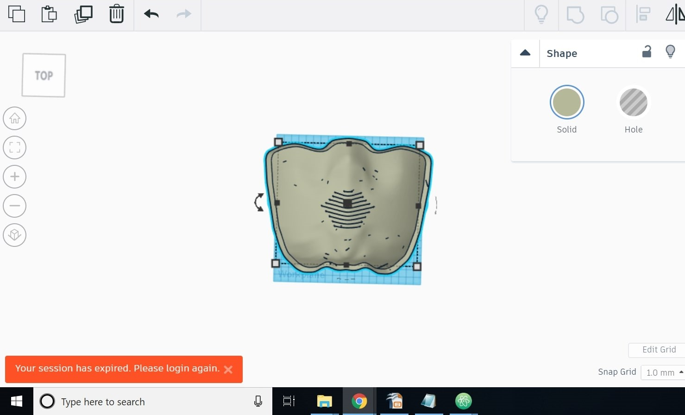
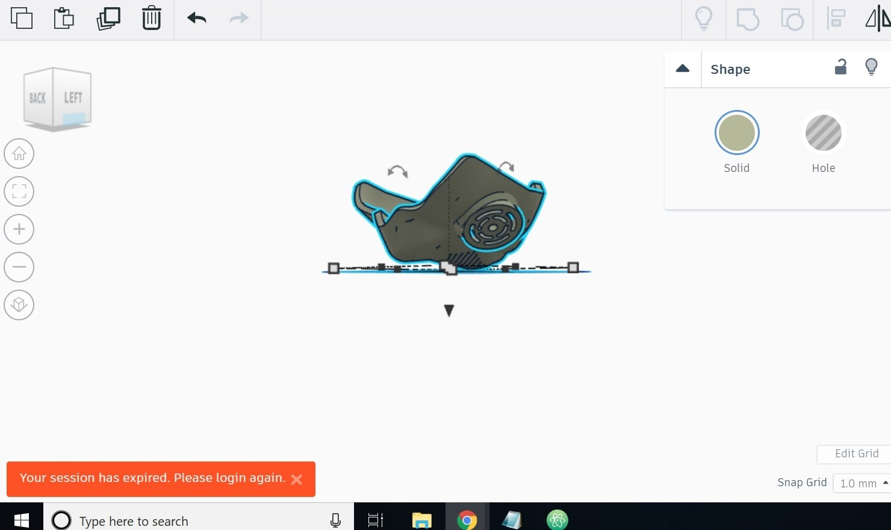
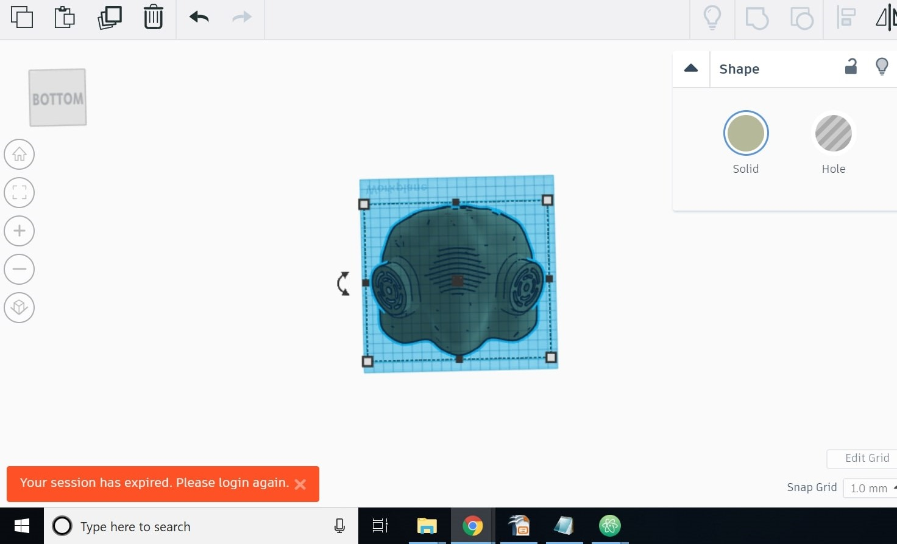

Mask
Our prototype is a mask that functions that same as the best masks for
filtering air, but they will be more accessible and affordable for times
of crisis and for low income communities.
Process
- Interview people about their expirences of asthma and their access to
resources during the 2018 California wildfires, if they lived in the Bay
Area at the time.
- Brainstorm about solutions for respiratory problems due to environmental
problems.
- We came to the conclusion that people did not have access to resources,
during the wildfires, specifically masks to filter air. Most people
noticed that even the surfical masks were out of stock.
- We came up with ideas like:
- an air conditioner
- a facitlity where people can go for refuge, if they have no place to go.
- a more afforadable mask, made with affordable and more durable material.
- We chose the mask and decided to 3D print the mask and buy a good
quality filter to make this mask a lot more affordable. We decided to 3D
print it because the material is accessible and easy to use/make.
- We designed a mask on TINKERCAD and printed it.
- We fit and sized the filter on the mask and tested it
Designing Prototype


